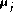
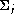
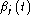
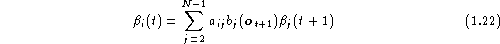

To determine the parameters of a HMM it is first necessary to make a rough guess at what they might be. Once this is done, more accurate (in the maximum likelihood sense) parameters can be found by applying the so-called Baum-Welch re-estimation formulae.
Chapter 8 gives the formulae used in HTK in full detail. Here the basis of the formulae will be presented in a very informal way. Firstly, it should be noted that the inclusion of multiple data streams does not alter matters significantly since each stream is considered to be statistically independent. Furthermore, mixture components can be considered to be a special form of sub-state in which the transition probabilities are the mixture weights (see Fig. 1.5).
Thus, the essential problem is to estimate the means and variances of a HMM in which each state output distribution is a single component Gaussian, that is
If there was just one state j in the HMM, this parameter estimation would be easy. The maximum likelihood estimates of  and  would be just the simple averages, that is
and
In practice, of course, there are multiple states and there is no direct assignment of observation vectors to individual states because the underlying state sequence is unknown. Note, however, that if some approximate assignment of vectors to states could be made then equations 1.11 and 1.12 could be used to give the required initial values for the parameters. Indeed, this is exactly what is done in the HTK tool called HINIT . HINIT first divides the training observation vectors equally amongst the model states and then uses equations 1.11 and 1.12 to give initial values for the mean and variance of each state. It then finds the maximum likelihood state sequence using the Viterbi algorithm described below, reassigns the observation vectors to states and then uses equations 1.11 and 1.12 again to get better initial values. This process is repeated until the estimates do not change.
Since the full likelihood of each observation sequence
is based on the summation of all possible state sequences,
each observation vector  contributes to the computation
of the maximum likelihood parameter values for each state j.
In other words, instead of assigning each observation vector
to a specific state as in the above approximation, each
observation is assigned to every state in proportion to
the probability of the model being in that state when the
vector was observed. Thus, if denotes the probability
of being in state j at time t then the
equations 1.11 and 1.12 given above become the
following weighted averages
contributes to the computation
of the maximum likelihood parameter values for each state j.
In other words, instead of assigning each observation vector
to a specific state as in the above approximation, each
observation is assigned to every state in proportion to
the probability of the model being in that state when the
vector was observed. Thus, if denotes the probability
of being in state j at time t then the
equations 1.11 and 1.12 given above become the
following weighted averages
and
where the summations in the denominators are included to give the required normalisation.
Equations 1.13 and 1.14 are the Baum-Welch re-estimation formulae for the means and covariances of a HMM. A similar but slightly more complex formula can be derived for the transition probabilities (see chapter 8).
Of course, to apply equations 1.13 and 1.14, the
probability of state occupation must be calculated.
This is done efficiently using the so-called Forward-Backward
algorithm. Let the forward probability
 for some model
M with N states be defined as
for some model
M with N states be defined as
That is,  is the joint probability of observing the
first t speech vectors and being in state j at time t. This
forward probability can be efficiently calculated by the following
recursion
is the joint probability of observing the
first t speech vectors and being in state j at time t. This
forward probability can be efficiently calculated by the following
recursion
This recursion depends on the fact that the probability
of being in state j at time t and seeing observation  can be deduced by summing the forward probabilities for all
possible predecessor states i weighted by the transition
probability
can be deduced by summing the forward probabilities for all
possible predecessor states i weighted by the transition
probability  . The slightly odd limits are caused by
the fact that states 1 and N are non-emitting. The
initial conditions for the above recursion are
. The slightly odd limits are caused by
the fact that states 1 and N are non-emitting. The
initial conditions for the above recursion are
for 1<j<N and the final condition is given by
Notice here that from the definition of  ,
,
Hence, the calculation of the forward probability also
yields the total likelihood  .
.
The backward probability  is defined as
As in the forward case, this backward probability can be computed efficiently using the following recursion

with initial condition given by
for 1<i<N and final condition given by
Notice that in the definitions above, the forward probability is a joint probability whereas the backward probability is a conditional probability. This somewhat asymmetric definition is deliberate since it allows the probability of state occupation to be determined by taking the product of the two probabilities. From the definitions,
Hence,
where .
All of the information needed to perform HMM parameter re-estimation using the Baum-Welch algorithm is now in place. The steps in this algorithm may be summarised as follows
.All of the above assumes that the parameters for a HMM are re-estimated from a single observation sequence, that is a single example of the spoken word. In practice, many examples are needed to get good parameter estimates. However, the use of multiple observation sequences adds no additional complexity to the algorithm. Steps 2 and 3 above are simply repeated for each distinct training sequence.
One final point that should be mentioned is that the computation of the forward and backward probabilities involves taking the product of a large number of probabilities. In practice, this means that the actual numbers involved become very small. Hence, to avoid numerical problems, the forward-backward computation is computed in HTK using log arithmetic .
The HTK program which implements the above algorithm is called HREST . In combination with the tool HINIT for estimating initial values mentioned earlier, HREST allows isolated word HMMs to be constructed from a set of training examples using Baum-Welch re-estimation.